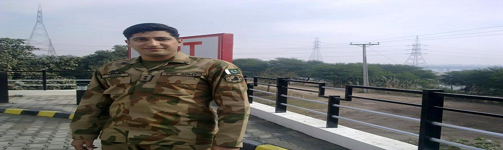
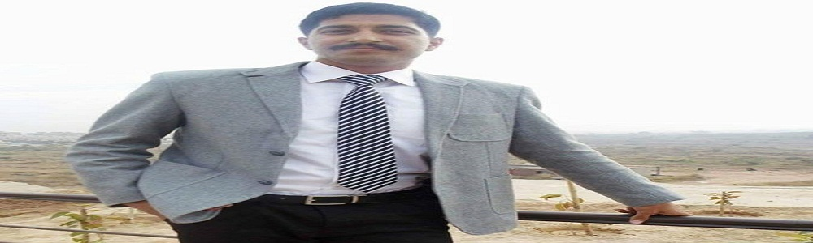
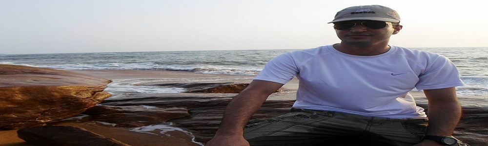
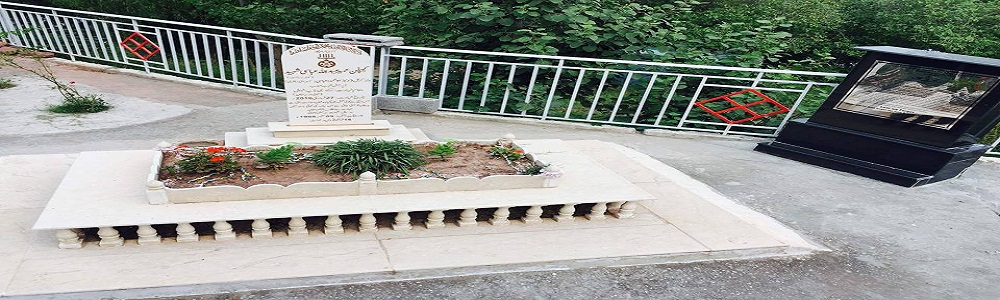
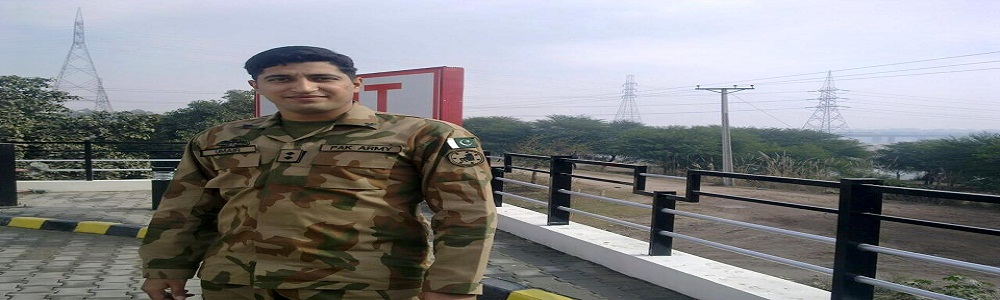
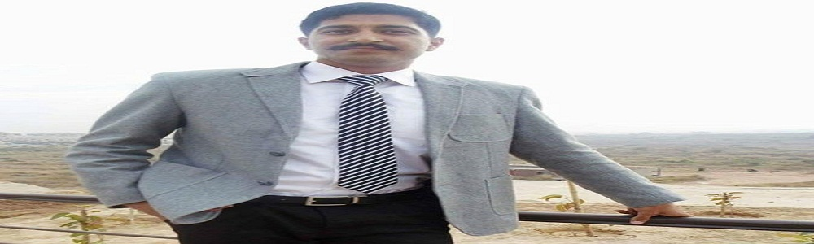
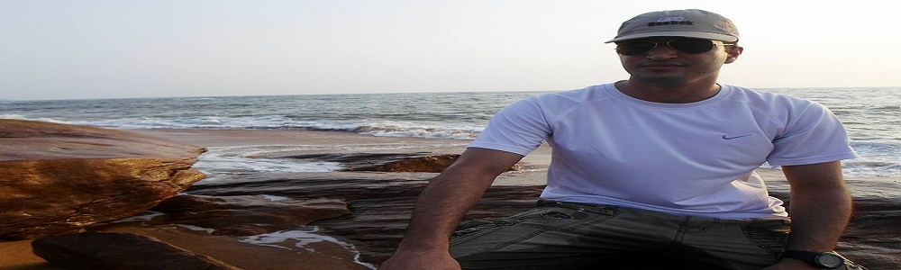
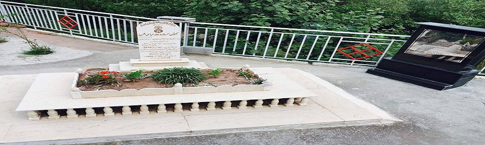

CAPTAIN UMAIR ABBASI (SHAHEED)
The graceful, jovial yet competent 27 year old young officer was one of four security personnel who lost their lives during an interchange of fire with militants while carrying out an operation near the Pak-Afghan border.
His course mate Capt Hamid Fayyaz said,
Umair was an extraordinary human being. Time spent with Umair during our PMA training is unforgettable. The whole course feels honoured that such a person was part of our course. It is no mistake that Umair was meant for martyrdom as he was gem of a person. He had cordial relations with everyone. He has the honour of being the first operational martyr of our course who laid down his life for the cause of Pakistan. We will miss him a lot but his martyrdom has laid down the foundation stone for the whole course to follow which is an emblem of bravery, honour and gallantry. His sacrifice will act as a beacon of light for the times to come
The whole nation pays tribute to his parents and family for raising such son of the soil who had made our head high.
MURREE: Capitan Umair Abdullah, who embraced martyrdom in Shawal region of North Waziristan, has been laid to rest in Tarmuthian on Sunday, Samaa reported.
Earlier, funeral prayer of the martyred Pakistan army officer was offered in Murree.
A large number of people including officers, personnel of armed forces and Defence Secretary Lt Gen (retd) Alam Khattak attended the funeral.
Petroleum Minister Shahid Khaqan Abbasi and provincial minister Raja Ashfaq Sarwar were also present.
Yesterday, four security personnel including Capt Umair embraced martyrdom while performing their duties in the final phase of operation against militants in Shawal region, Inter Services Public Relations (ISPR) said.
“Ground forces surrounded a group of fleeing terrorists in the Mangroti area near the Afghanistan border in the Shawal region of the North Waziristan district and 19 militants were killed during the intense exchange of fire," the ISPR added.
Meanwhile, Chief of Army Staff General Raheel Sharif said that the Pakistan Army is determined to finish all the terrorists from pockets in every nook and corner in the country.
 







.png "Google")
.jpg "Youtube")

.jpg "Twitter")